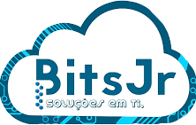

Quem somos?
Graduandos de engenharia da computação com o objetivo de entrar na BitsJunior, criamos essa one page para cumprir nossa segunda tarefa do processo seletivo. A nossa equipe é composta de 3 membros Juliana, mikael e bryan.
A bitsJunior é uma empresa junior do curso de engenharia da computação, na qual busca introduzir os jovens graduandos no mercado de trabalho. Para tanto os membros da mesma realizam projetos reais para as empresas que desejam adquirir seus serviços, tanto em programação web como mobile, tentando assim agregar em sí todos os elementos que seriam encontrados após a graduação e dessa forma o impacto sobre o jovem seria amenizado, visto que ja obteve uma experiencia profissional anteriormente.
As vantagens de se trabalhar na bits são inumeras, nesse núcleo é prezado o companheirismo e o trabalho duro, além de ser um projeto de extensão e um estágio para quem participa, dessa forma cumprindo a carga horária de que os currículos necessitam.
Em síntese, esse texto tem como finalidade apresentar a BitsJunior e as vantagens de se ingressar na mesma, dessa forma buscando incentivar os demais, visto que a empresa necessita de que os demais continuem o trabalho iniciado pelos jovens fundadores.
- 
Linguagens usadas
Está one page é baseada no código puro, sem nenhum uso de template, apartir do html, css e javaScript.
O HTML é a liguagem base da internet. Foi criada para ser de fácil entendimento por seres humanos e também por máquinas, como por exemplo o Google ou outros sistemas que percorrem a internet capturando informação.
Tim Berners-Lee. Esse é o nome do homem que criou o HTML. Ele criou o HTML para a comunicação e disseminação de pesquisas entre ele e seu grupo de colegas. O HTML ficou bastante conhecido quando começou a ser utilizada para formar a rede pública daquela época, o que se tornaria mais tarde a internet que conhecemos hoje.
CSS é uma linguagem de folha de estilos, que tem o papel de tornar uma página apresentável na web, relacionada diretamente com o design e aparência.
JavaScript é uma linguagem de programação que permite a você implementar itens complexos em páginas web, toda vez que uma página da web faz mais do que simplesmente mostrar a você informações estáticas.
Em síntese o que queremos apresentar é o que últilizamos para criar-mos nossa one page, dessa forma demonstrando um pouco do que as linguagens de programação podem fazer.